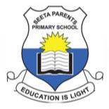

| brief review of my background | ||||
| I live in Kisaasi-Kyanja in Kampala where i have grown and been for over 20yrs. I was born and raised by Mr. and Mrs. Mukiibi Dan and Evelyne respectively. | ||||
I have gone to the following schools from nursery todate!
|
||||
 |
Goose Nursery and Daycare It's located in ministers village Ntinda, Nakawa-Kampala. I was there from 2003 to 2005 |
|||
| St. Francis Primary School It's located in Kigowa Ntinda, Nakawa-Kampala. I was there only in 2006 and 2007 |
 |
|||
|  | Seeta Parents Primary School It's located in Seeta Mukono Municipality. I was there from 2008 to 2013 |
|||
| Namilyango College It's located on Namilyango hill Mukono Municipality. I was there from 2014 to 2015 |
||||
| St, Cyprian High School Kyabakadde It's located along Kira Rd in Kyabakadde Mukono. I was there from 2015 to 2018 |
||||
| Wampeewo Ntakke Secondary School It's located along Gayaza Rd Wampeewo Wakiso district. I was there from 2019 to 2021. I suffered the COVID-19 season here. |
||||
| Multitech Business School It's located along Sir Apollo Kaggwa Rd Bukesa, Rubaga-Kampala I have been there from 2021 todate |
||||